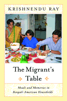

How food choices reflect the dilemmas of ethnicity
How food choices reflect the dilemmas of ethnicity


 How food choices reflect the dilemmas of ethnicity
How food choices reflect the dilemmas of ethnicity

|  |
The Migrant's TableMeals and Memories in Bengali-American HouseholdsKrishnendu Raypaper EAN: 978-1-59213-096-2 (ISBN: 1-59213-096-8) |
"The Migrant's Table will make a major contribution to our understanding of modernization, globalization, immigration, and neo-ethnicity. We can see how migrants are quintessentially modern in placing great hope in the future while also seeking to anchor their identity in nostalgia for the past. The discussion of how immigrants have adapted to the 4th of July and Thanksgiving is brilliant and eye-opening. Ray is one of the most astute, well-grounded commentators working in the field of food studies today. This is an extremely impressive book."
—Warren Belasco, Department of American Studies, University of Maryland, Baltimore County
To most of us the food that we associate with home—our national and familial homes—is an essential part of our cultural heritage. No matter how open we become to other cuisines, we regard home-cooking as an intrinsic part of who we are. In this book, Krishnendu Ray examines the changing food habits of Bengali immigrants to the United States as they deal with the tension between their nostalgia for home and their desire to escape from its confinements.
As Ray says, "This is a story about rice and water and the violations of geography by history." Focusing on mundane matters of immigrant life (for example, what to eat for breakfast in America), he connects food choices to issues of globalization and modernization. By showing how Bengali immigrants decide what defines their ethnic cuisine and differentiates it from American food, he reminds us that such boundaries are uncertain for all newcomers. By drawing on literary sources, family menus and recipes for traditional dishes, interviews with Bengali household members, and his own experience as an immigrant, Ray presents a vivid picture of immigrants grappling with the grave and immediate problem of defining themselves in their home away from home.
Excerpt available at www.temple.edu/tempress
"Indeed, it is Ray's willingness to tread nonconformist waters that makes The Migrant's Table not only innovative and intellectually stimulating, but also a pleasure to read. His research makes several important contributions."
—Gastronomica
Acknowledgments
1. Introduction
2. West Bengali Food Norms: Geography, Economy, and Culture
3. Bengali-American Food Consumption
4. Gastroethnicity: Reorienting Ethnic Studies
5. Food Work: Labor of Love?
6. Meals, Migration, and Modernity
Appendix 1: Survey Questionnaire
Appendix 2: Tables
Appendix 3: Seven-Day Menu for a Bengali-American
Family in the Greater Chicago Area
Appendix 4: Recipes
Notes
Glossary of Commonly Used Indian Words
References
Index
 | Krishnendu Ray is Associate Professor of Liberal Arts and Management at the Culinary Institute of America. |
Race and Ethnicity
Sociology
American Studies
© 2015 Temple University. All Rights Reserved. This page: http://www.temple.edu/tempress/titles/1742_reg.html.